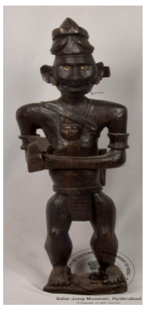

🔇 Is bhasha me is vastu ka audio abhi uplabdh nahi hai.
1. ACQ - 90 - 12: आदिमानव की मूर्ति

1. ACQ - 90 - 12
यह एक खड़े हुए प्रारंभिक मानव की लकड़ी में उकेरी गई मूर्ति है। यह मानव अपने हाथों में चाकू (क्लीवर) पकड़े हुए है। आँखों को यथार्थवादी दिखाने के लिए काले आईबॉल्स को सफेद घेरे से घेरा गया है, जो संभवतः धातु या शेल से बनाए गए हैं। “प्रारंभिक मानव” शब्द विभिन्न प्रारंभिक मानव समूहों के लिए उपयोग किया जा सकता है, जो सरल, प्रौद्योगिकी-रहित समाज में रहते थे और मानव विकास के शुरुआती चरण से संबंधित थे। इनमें गुफा निवासियों, शिकार-इकट्ठा करने वाले समुदाय और प्रारंभिक जनजातीय समाज शामिल हैं। प्रारंभिक समाज अक्सर छोटे, खानाबदोश समूहों में रहते थे और अपनी जीविका के लिए शिकार और संग्रह पर निर्भर रहते थे। कई प्रारंभिक समाजों में लिखित भाषा नहीं थी और वे मौखिक परंपराओं और दृश्य संचार पर निर्भर रहते थे। यह प्रारंभिक मानव भारत का है और इसका इतिहास 19वीं सदी का है।
1. ACQ - 90 - 12: Figure of a Primitive Man
1. ACQ - 90 - 12
This is a wooden carved figure of a standing primitive man. The man holds a cleaver in his hands. To make the eyes look lifelike, the black eyeballs are ringed with white circles, probably made of metal or shell. The term “primitive man” may be used for various early human groups who lived in simple, technology-free societies and belonged to the early stages of human evolution. These include cave dwellers, hunter-gatherer communities and early tribal societies. Early societies often lived in small, nomadic groups and depended on hunting and gathering for their livelihood. Many early societies had no written language and relied on oral traditions and visual communication. This figure of a primitive man is from India and dates to the 19th century.
1.ACQ - 90 - 12: ఆదిమ మానవుని బొమ్మ
1.ACQ - 90 - 12
ఈ బొమ్మ చెక్కతో చెక్కబడిన నిలబడిన ఆదిమ మానవుడిని రూపాన్ని సూచిస్తుంది. ఆ వ్యక్తి తన బిగించిన చేతులతో ఒక కత్తిని (cleaver) పట్టుకుని ఉన్నాడు. అతని కళ్ళు యదార్థంగా కనిపించేలా, తెల్లటి రింగులతో (బహుశా లోహపు పెంకుతో చేసినవి) చుట్టుముట్టబడిన ముదురు కనుగుడ్లు అమర్చబడ్డాయి. "ఆదిమ మానవుడు" అనే పదం సాంకేతిక పరిజ్ఞానం లేని, పారిశ్రామిక పూర్వ సమాజానికి చెందిన తొలి మానవ సమూహాలను—గుహలలోనివసించె వారిలో ఉండే వేటగాళ్ళు- సేకర్తలు మరియు ఆదిమ గిరిజన సమాజాలు వంటివి—సూచిస్తుంది. ఈ సమాజాలు సాధారణంగా చిన్న, సంచార సమూహాలుగా జీవిస్తూ, ఆహారం కోసం వేట మరియు సేకరణపై ఆధారపడేవి. వారికి లిఖిత భాష లేకపోవడంతో, వారు మౌఖిక సంప్రదాయాలు మరియు దృశ్య సమాచారంపై ఆధారపడేవారు. ఈ ఆదిమ మానవుని బొమ్మ భారతదేశానికి చెందినది మరియు దీని కాలం 19వ శతాబ్దానికి చెందింది.
1. ACQ - 90 - 12: ஆதிமனிதனின் உருவச்சிலை
1. ACQ - 90 - 12
நின்றநிலையில்காணப்படும்ஆதிமனிதனின் உருவச்சிலைமரத்தில்செதுக்கப்பட்டுள்ளது. அந்தமனிதன்தனதுஇறுக்கமாகப்பிடித்தகைகளில்ஒருபெரியவெட்டுக்கத்தியைபிடித்திருப்பதுபோல்காட்டப்பட்டுள்ளது. கண்கள்பார்ப்பதற்கு இயல்பாகத்தோன்றும்வகையில்வடிவமைக்கப்பட்டுள்ளன; கருமைநிறகண்மணிகள்வெள்ளைவளையங்களால்சூழப்பட்டுள்ளன. அவைஉலோகத்தோல்அல்லதுசிப்பிபோன்றபொருளால்செய்யப்பட்டிருக்கலாம்.
‘ஆதிமனிதன்’ என்றசொல்குகைவாசிகள், வேட்டைக்காரர்கள் - சேகரிப்பாளர்கள் மற்றும் ஆரம்பகால பழங்குடி சமூகங்கள் உட்பட, மனித வளர்ச்சியின் ஆரம்ப கட்டத்தைச் சேர்ந்த, மேம்பட்ட தொழில்நுட்பம் இல்லாத ஒரு எளிய, தொழில்துறைக்கு முந்தைய சமூகத்தில் வாழும் பல்வேறு பழங்குடி மக்களைக் குறிக்கலாம். இவ்வகைசமூகங்கள்பெரும்பாலும் நாடோடி குழுக்களாகவாழ்ந்து, உணவிற்காகவேட்டையாடுதல்மற்றும்சேகரித்தல்ஆகியவற்றையேநம்பியிருந்தனர். பலஆதிமனிதசமூகங்களுக்குஎழுத்துமொழிஇல்லாமல், வாய்மொழிமரபுகளும்காட்சிவழியாக தகவல் தொடர்புகளும்முக்கியமானதாகஇருந்தன.இந்தஆதிமனிதன்உருவச்சிலைஇந்தியாவைச்சேர்ந்ததாகும்; இது 19ஆம்நூற்றாண்டைச்சேர்ந்ததாகக்கருதப்படுகிறது.”
‘ஆதிமனிதன்’ என்றசொல்குகைவாசிகள், வேட்டைக்காரர்கள் - சேகரிப்பாளர்கள் மற்றும் ஆரம்பகால பழங்குடி சமூகங்கள் உட்பட, மனித வளர்ச்சியின் ஆரம்ப கட்டத்தைச் சேர்ந்த, மேம்பட்ட தொழில்நுட்பம் இல்லாத ஒரு எளிய, தொழில்துறைக்கு முந்தைய சமூகத்தில் வாழும் பல்வேறு பழங்குடி மக்களைக் குறிக்கலாம். இவ்வகைசமூகங்கள்பெரும்பாலும் நாடோடி குழுக்களாகவாழ்ந்து, உணவிற்காகவேட்டையாடுதல்மற்றும்சேகரித்தல்ஆகியவற்றையேநம்பியிருந்தனர். பலஆதிமனிதசமூகங்களுக்குஎழுத்துமொழிஇல்லாமல், வாய்மொழிமரபுகளும்காட்சிவழியாக தகவல் தொடர்புகளும்முக்கியமானதாகஇருந்தன.இந்தஆதிமனிதன்உருவச்சிலைஇந்தியாவைச்சேர்ந்ததாகும்; இது 19ஆம்நூற்றாண்டைச்சேர்ந்ததாகக்கருதப்படுகிறது.”
1. ACQ - 90 - 12: आदिमानवाची मूर्ती
1. ACQ - 90 - 12
ही उभ्या असलेल्या आदिमानवाची लाकडात कोरलेली मूर्ती आहे. हा मानव आपल्या हातात सुरा (क्लीव्हर) धरून आहे. डोळे वास्तववादी दिसावेत म्हणून काळ्या बुबुळांभोवती पांढरे वर्तुळ केले आहे, जे बहुधा धातू किंवा शिंपल्यापासून बनवलेले असावे. “आदिमानव” हा शब्द विविध प्रारंभिक मानवी समूहांसाठी वापरला जातो, जे साध्या, तंत्रज्ञानरहित समाजात राहत होते आणि मानवी उत्क्रांतीच्या सुरुवातीच्या टप्प्याशी संबंधित होते. यामध्ये गुहेत राहणारे लोक, शिकार व अन्नसंकलन करणारे समुदाय आणि प्रारंभिक आदिवासी समाज यांचा समावेश होतो. हे समाज बहुधा लहान, भटक्या गटांत राहत आणि उदरनिर्वाहासाठी शिकार व संकलनावर अवलंबून असत. अनेक प्रारंभिक समाजांना लिखित भाषा नव्हती आणि ते मौखिक परंपरा व दृश्य संवादावर अवलंबून होते. ही आदिमानवाची मूर्ती भारताची असून ती १९व्या शतकातील आहे.
1. ACQ-90-12: ഒരു ആദിമ മനുഷ്യൻറെ രൂപം
1. ACQ-90-12
മരത്തിൽ കൊത്തിയെടുത്ത, നിൽക്കുന്ന രൂപത്തിലുള്ള ഒരു ആദിമ മനുഷ്യന്റെ ശില്പം. മുറുക്കിപ്പിടിച്ച കൈകളിൽ അദ്ദേഹം ഒരു വെട്ടുകത്തി ഏന്തിയിരിക്കുന്നു..ലോഹമോ ചിപ്പിയോകൊണ്ട് നിർമ്മിച്ച വെളുത്ത വട്ടങ്ങൾക്കുള്ളിൽ കറുത്ത കൃഷ്ണമണികൾ നൽകിക്കൊണ്ട്, കണ്ണുകൾക്ക് സ്വാഭാവികമായ രൂപം നൽകിയിട്ടുണ്ട്. 'ആദിമ മനുഷ്യൻ' എന്ന പദം കൊണ്ട് അർത്ഥമാക്കുന്നത് വ്യവസായവൽക്കരണത്തിന് മുൻപുള്ള, ലളിതമായ സാഹചര്യങ്ങളിൽ ജീവിച്ചിരുന്ന വിവിധ മനുഷ്യവിഭാഗങ്ങളെയാണ്. ഗുഹാവാസികൾ, വേട്ടയാടി ഉപജീവനം കഴിക്കുന്നവർ, പഴയകാല ഗോത്രവർഗ്ഗക്കാർ എന്നിവരെല്ലാം ഇതിൽ ഉൾപ്പെടുന്നു. ആധുനിക സാങ്കേതികവിദ്യയുടെഅഭാവമുള്ള, മനുഷ്യവികാസത്തിന്റെ ആദ്യഘട്ടത്തിലുള്ള സമൂഹങ്ങളാണിവ. ആദിമ സമൂഹങ്ങൾ പലപ്പോഴും ചെറിയ നാടോടി സംഘങ്ങളായി ജീവിക്കുകയും നായാട്ടിലൂടെയും വനവിഭവങ്ങൾ ശേഖരിച്ചുമാണ് ഉപജീവനം നടത്തിയിരുന്നത്. മിക്ക ആദിമ സമൂഹങ്ങൾക്കും എഴുതപ്പെട്ട ഭാഷ ഉണ്ടായിരുന്നില്ല; പകരം വാമൊഴി പാരമ്പര്യത്തെയും ദൃശ്യവിനിമയങ്ങളെയുമാണ് അവർ ആശ്രയിച്ചിരുന്നത്. ഇന്ത്യയിൽ നിന്നുള്ള ഈ ആദിമ മനുഷ്യന്റെ രൂപം പത്തൊൻപതാം നൂറ്റാണ്ടിലേതാണ്. പത്തൊൻപതാം നൂറ്റാണ്ടിൽ ഇന്ത്യയിൽ നിർമ്മിക്കപ്പെട്ടതാണ് ഈ ശില്പം.
CS-II-153: നായയോടൊപ്പമുള്ള ക്യൂപിഡ്
CS-II-153: നായയോടൊപ്പമുള്ള ക്യൂപിഡ്
ACQ-90-12:ಫಿಗರ್ ಆಫ್ ಎ ಪ್ರಿಮಿಟಿವ್ ಮ್ಯಾನ್
ACQ-90-12
ಮರದಲ್ಲಿ ಕೆತ್ತಲಾದ, ನಿಂತಿರುವ ಭಂಗಿಯ ಆದಿಮಾನವನ ಶಿಲ್ಪ ಕಲಾಕೃತಿಇದು. ಆ ಮನುಷ್ಯನು ತನ್ನ ಬಿಗಿಯಾದ ಮುಷ್ಟಿಯಲ್ಲಿ ಚೂರಿಯನ್ನು ಹಿಡಿದುಕೊಂಡಿದ್ದಾನೆ. ಇದರ ಕಣ್ಣುಗಳನ್ನು ಅತ್ಯಂತ ನೈಜವಾಗಿ ಕಾಣುವಂತೆ ವಿನ್ಯಾಸಗೊಳಿಸಲಾಗಿದ್ದು, ಲೋಹದ ಚಿಪ್ಪಿನಿಂದ ಮಾಡಿರಬಹುದಾದ ಬಿಳಿ ಉಂಗುರಗಳಿಂದ ಸುತ್ತುವರಿದ ಕಪ್ಪು ಕಣ್ಣಿನ ಗುಡ್ಡೆಗಳನ್ನು ಇದು ಹೊಂದಿದೆ."ಆದಿಮಾನವ" ಎಂಬ ಪದವು ಮಾನವನ ಬೆಳವಣಿಗೆಯ ಆರಂಭಿಕ ಹಂತಕ್ಕೆ ಸೇರಿದ, ಸುಧಾರಿತ ತಂತ್ರಜ್ಞಾನದ ಕೊರತೆಯಿರುವ, ಸರಳವಾದ ಮತ್ತು ಕೈಗಾರಿಕಾ-ಪೂರ್ವ ಸಮಾಜದಲ್ಲಿ ವಾಸಿಸುತ್ತಿದ್ದ ವಿವಿಧ ಆರಂಭಿಕ ಮಾನವ ಗುಂಪುಗಳನ್ನು ಉಲ್ಲೇಖಿಸುತ್ತದೆ. ಇದರಲ್ಲಿ ಗುಹೆಗಳಲ್ಲಿ ವಾಸಿಸುವವರು, ಬೇಟೆಗಾರರು ಮತ್ತು ಆಹಾರ ಸಂಗ್ರಹಿಸುವವರು ಹಾಗೂ ಆರಂಭಿಕ ಬುಡಕಟ್ಟು ಸಮಾಜಗಳು ಸೇರಿವೆ.ಆದಿಮಾನವ ಸಮಾಜಗಳು ಹೆಚ್ಚಾಗಿ ಸಣ್ಣ, ಅಲೆಮಾರಿ ಗುಂಪುಗಳಲ್ಲಿ ವಾಸಿಸುತ್ತಿದ್ದವು ಮತ್ತು ತಮ್ಮ ಜೀವನೋಪಾಯಕ್ಕಾಗಿ ಬೇಟೆಯಾಡುವುದು ಹಾಗೂ ಆಹಾರವನ್ನು ಸಂಗ್ರಹಿಸುವುದನ್ನೇ ಅವಲಂಬಿಸಿದ್ದವು. ಅನೇಕ ಆದಿಮಾನವ ಸಮಾಜಗಳಲ್ಲಿ ಲಿಖಿತ ಭಾಷೆಯ ಕೊರತೆಯಿತ್ತು, ಹೀಗಾಗಿ ಅವರು ಹೆಚ್ಚಾಗಿ ಮೌಖಿಕ ಸಂಪ್ರದಾಯಗಳು ಮತ್ತು ದೃಶ್ಯ ಸಂವಹನವನ್ನು ಅವಲಂಬಿಸಿದ್ದರು. ಭಾರತದಲ್ಲಿಯೇ ರೂಪುಗೊಂಡಿರುವ ಈ ಆದಿಮಾನವನ ಕಲಾಕೃತಿಯು 19ನೇ ಶತಮಾನದಷ್ಟು ಹಳೆಯದಾಗಿದೆ.
1. ACQ - 90 - 12: ଆଦିମ ପୁରୁଷର ମୂର୍ତ୍ତି
1. ACQ - 90 - 12
କାଠରେ ଖୋଦିତ ଠିଆ ଆଦିମ ପୁରୁଷ। ଏଠାରେ ଦେଖିବା ଯେ ମୂର୍ତ୍ତିଟି ହାତକୁ ଜୋଡ଼ି କରି ରଖିବା ସହ ସେଥିରେ କଟାଳି ଧରିଅଛି। ଚକ୍ଷୁକୁ ବାସ୍ତବ ରୂପ ଦେବା ପାଇଁ, ସେଥିରେ କଳାରଙ୍ଗର ବଲ ଚାରିପଟେ ଧଳା ରଙ୍ଗର ବଳୟ ଘେରି ରହିଲା ପରି ଦୃଶାୟିତ ହୋଇଥାଏ, ଯାହା ସମ୍ଭବତଃ ଗୋଟିଏ ଧାତୁର ଆବରଣରେ ତିଆରି ହୋଇଅଛି। "ଆଦିମ ପୁରୁଷ" ଶବ୍ଦଟି ଏକ ସରଳ, ପ୍ରାକ୍-ଶିଳ୍ପ ସମାଜରେ ବାସ କରୁଥିବା ବିଭିନ୍ନ ପ୍ରାରମ୍ଭିକ ମାନବ ଗୋଷ୍ଠୀକୁ ବୁଝାଇପାରେ ଯେଉଁମାନେ ମାନବ ବିକାଶର ପ୍ରାରମ୍ଭିକ ପର୍ଯ୍ୟାୟରେ, ଉନ୍ନତ ପ୍ରଯୁକ୍ତିର ଅଭାବ, ଯେଉଁମାନେ ଗୁମ୍ଫାର ବାସିନ୍ଦା ଥିଲେ, ଶିକାରୀ- ସଂଗ୍ରହକାରୀ ଏବଂ ପ୍ରାରମ୍ଭିକ ଆଦିବାସୀ ସମାଜରେମଧ୍ୟ ଅନ୍ତର୍ଭୁକ୍ତ ହୋଇଥାଇ ପାରନ୍ତି।ଆଦିମ ସମାଜଗୁଡ଼ିକ ପ୍ରାୟତଃ ଛୋଟ ଛୋଟ ଯାଯାବର ଗୋଷ୍ଠୀରେ ରହୁଥିଲେ, ଯେଉଁମାନେ ଖାଦ୍ୟ ପାଇଁ ଶିକାର ଏବଂ ସଂଗ୍ରହ ଉପରେ ନିର୍ଭର କରୁଥିଲେ। ଅନେକ ଆଦିମ ସମାଜରେ ଲିଖିତ ଭାଷାର ଅଭାବ ଥିଲା, ସେମାନେ ମୌଖିକ ପରମ୍ପରା ଏବଂ ଚିତ୍ର ସାହାଯ୍ୟରେ ଯୋଗାଯୋଗ ଉପରେ ନିର୍ଭର କରୁଥିଲେ। ଏହି ଆଦିମ ବ୍ୟକ୍ତିର ମୂର୍ତ୍ତି ଭାରତରେ 19ଶ ଶତାବ୍ଦୀରେ ନିର୍ମିତ ହୋଇଅଛି ବୋଲି ଅନୁମାନ କରାଯାଉଅଛି।
1. ACQ - 90 - 12: আদিমানবের মূর্তি
1. ACQ - 90 - 12
কাঠে খোদাই করা এক দণ্ডায়মান আদিমানবের মূর্তি। মূর্তিটি তার দৃঢ়মুষ্টিতে একটি চপার বা বড় দা ধরে আছে। তার চোখের মণিগুলি গাঢ় এবং তার চারপাশে সাদা বলয় থাকায় চোখগুলোকে অত্যন্ত জীবন্ত দেখায়, যা সম্ভবত ধাতব পাত বা ঝিনুকের খোল দিয়ে তৈরি।"আদিমানব" শব্দটি মানব বিবর্তনের প্রাথমিক স্তরের বিভিন্ন আদিম গোষ্ঠী বা সম্প্রদায়কে বোঝাতে ব্যবহার করা হয়, যারা প্রাক-শিল্পায়ন যুগের সহজ-সরল সমাজে বসবাস করত। এদের মধ্যে গুহাবাসী, শিকারি-সংগ্রাহক এবং আদিম উপজাতীয় সমাজ অন্তর্ভুক্ত, যাদের উন্নত প্রযুক্তির অভাব ছিল। আদিম সমাজগুলি প্রায়শই ক্ষুদ্র যাযাবর দলে বাস করত এবং জীবনধারণের জন্য শিকার ও সংগ্রহের ওপর নির্ভর করত। অনেক আদিম সমাজে লিখিত ভাষার অভাব ছিল, যার পরিবর্তে তারা মৌখিক ঐতিহ্য এবং দৃশ্যমান যোগাযোগের ওপর নির্ভর করত। এই আদিমানবের মূর্তিটি ভারতবর্ষের এবং এটি ১৯ শতকের নিদর্শন।
1. اے سی کیو-90-12: ایک قدیم انسان کا مجسمہ۔
1. اے سی کیو-90-12
لکڑیمیںتراشاہواایککھڑاہواقدیمانسان۔وہشخصاپنےدونوںجمیہوئیہاتھوںمیںایککلہاڑیپکڑےہوئےہے۔آنکھیںبہتحقیقتیدکھائیگئیہیں،جنکیسیاہپتلیوںکوسفیدحلقےگھیرےہوئےہیں،جوشایددھاتیاشیلسےبنےہیں۔ "قدیمانسان" کیاصطلاحمختلفابتدائیانسانیگروہوںکےلیےاستعمالہوتیہے،جوسادہ،قبلازصنعتیمعاشروںمیںرہتےتھےاورانسانیترقیکےابتدائیمرحلےسےتعلقرکھتےتھے۔ انکےپاسجدیدٹیکنالوجینہیںتھی،جیسےکہغارمیںرہنےوالے،شکاراورجمعکرنےوالے،اورابتدائیقبائلیمعاشرے۔یہ قدیممعاشرےاکثرچھوٹے،خانہبدوشگروہوںمیںرہتےاوراپنیبقاکےلیےشکاراورجمعآوریپرانحصارکرتےتھے۔بہتسےقدیممعاشروںمیںتحریریزبانکا جود نہیںتھااوروہزبانیروایاتاوربصریرابطےپرزیادہانحصارکرتےتھے۔یہقدیمانسانہندوستنسےتعلقرکھتاہےاوریہ 19ویںصدیکاہے۔
1. ACQ-90-12: આદિમ માણસનું ચિત્ર
1. ACQ-90-12
લાકડામાં કોતરવામાં આવેલો એક ઊભો આદિમ માણસ. તે માણસે પોતાની મુઠ્ઠીમાં છરો પકડેલો છે. આંખો વાસ્તવિક દેખાય તેવી બનાવવામાં આવી છે, જેમાં કાળા આંખના ગોળા સફેદ વલયોથી ઘેરાયેલા હોય છે જે કદાચ ધાતુના કંબુથી બનેલા હોય છે. "આદિમ માણસ" શબ્દ માનવ વિકાસના પ્રારંભિક તબક્કાના, અદ્યતન ટેકનોલોજીના અભાવ સાથે સંકળાયેલા, સરળ, પૂર્વ-ઔદ્યોગિક સમાજમાં રહેતા વિવિધ પ્રારંભિક માનવ જૂથોનો ઉલ્લેખ કરી શકે છે, જેમાં ગુફામાં રહેતા લોકો, શિકારી-સંગ્રાહક કરનારાઓ અને પ્રારંભિક આદિવાસી સમાજોનો સમાવેશ થાય છે. આદિમ સમાજો ઘણીવાર નાના, વિચરતાં જૂથોમાં રહેતા હતા, જે નિર્વાહ માટે શિકાર અને મેળાવડા પર આધારિત હતા. ઘણા આદિમ સમાજોમાં લેખિત ભાષાનો અભાવ હતો, તેના બદલે મૌખિક પરંપરાઓ અને દ્રશ્ય સંચાર પર આધાર રાખતા હતા. આ આદિમ માણસ ભારતનો છે અને તે 19મી સદીનો છે.